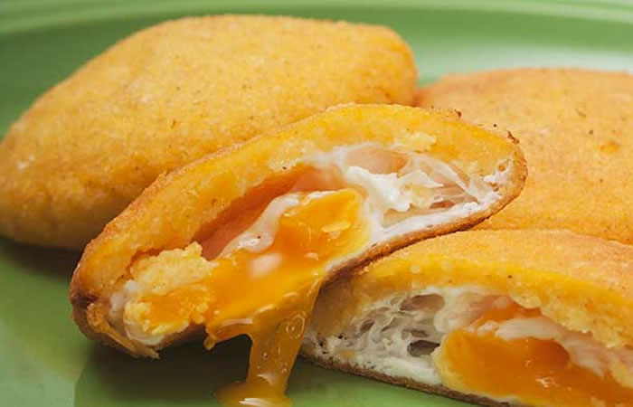

La arepa de huevo
La arepa de huevo (llamada coloquialmente arepa'e huevo) es una arepa típica de la Costa Atlántica Colombiana, la cual se compone de arepa de maíz y huevo en el interior. Su preparación consiste en freír la masa anticipadamente, luego se vierte un huevo crudo y se regresa a freír. Algunas preparaciones, además del huevo, llevan también carne desmechada o carne molida.